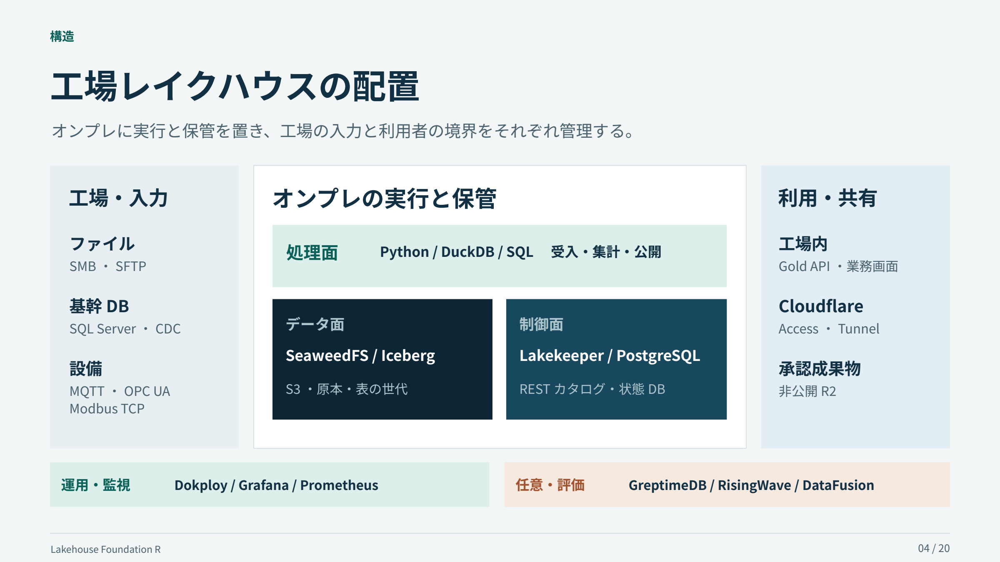
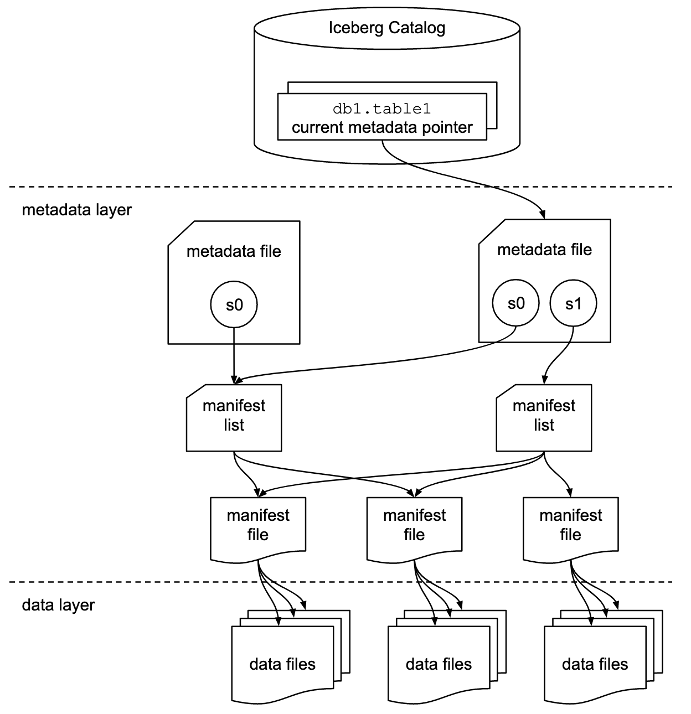
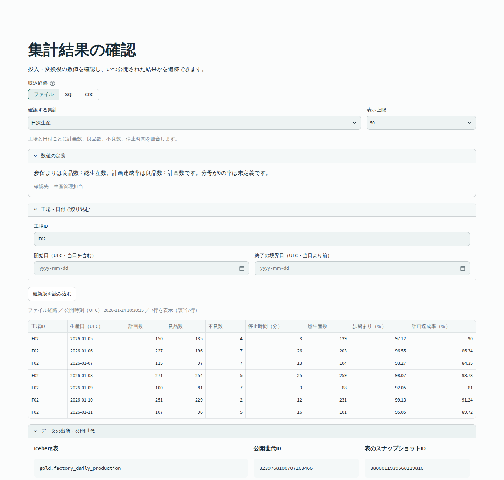
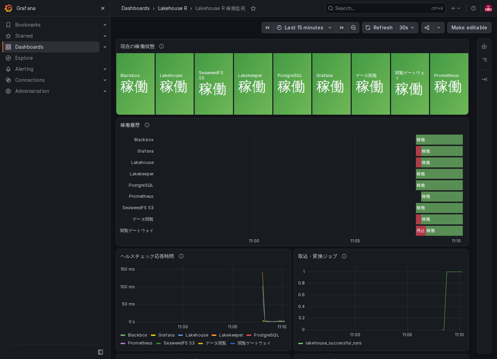
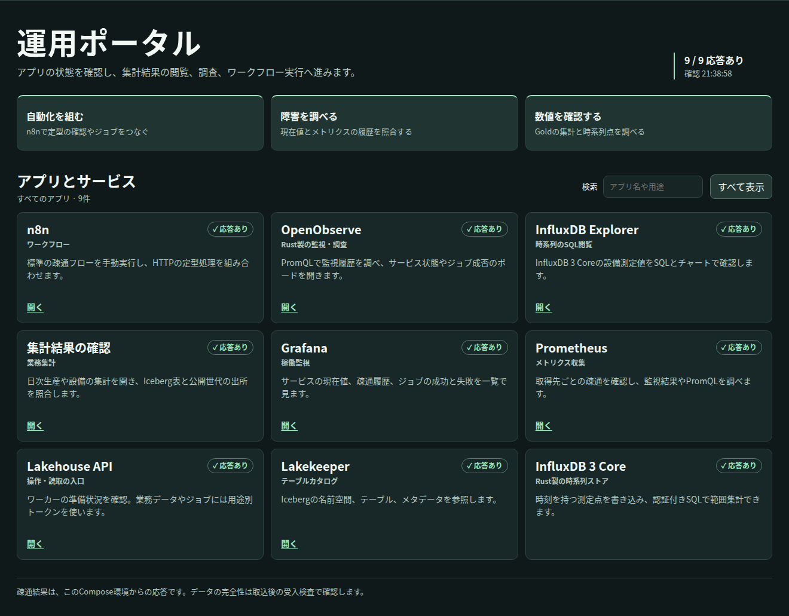

工場システム担当
元システムから安全に取り出し、列定義や完了印を付けて渡す。PLCや基幹DBとの接続権限は入力側で管理する。
工場で受け取ったデータを保全し、数字の出所をたどれる集計として届ける。
誰が値を決め、誰が運び、誰が公開を保証するかを先に決める。
元システムから安全に取り出し、列定義や完了印を付けて渡す。PLCや基幹DBとの接続権限は入力側で管理する。
工場日次、受注、設備品質などの定義を決める。欠測や遅延、取消の意味も業務ごとの契約に残す。
原本、検証結果、公開世代を保全する。失敗箇所を絞り、同じ入力を安全に再実行できる状態にする。
保存・カタログ・計算・利用を別々に変更できる構成。

Medallionの各層で、保存した事実と業務上の判断を記録する。
ハッシュを照合し、元ファイルを保全。
再取込と監査の根拠配送や入力台帳に紐づけ、読める形に揃える。
由来と処理の記録型、業務キー、重複、最新版を検査。
再利用できる業務表目的別の集計を作り、表の版を公開台帳へ。
利用者へ渡す結果列名のほか、キー・時刻・品質・重複・不成立時の扱いをデータ契約にする。
| 製品 | 集計の単位 | 実装する判断 |
|---|---|---|
| 日次生産 | 工場 × 生産日 | 計画、実績、停止を同じ粒度にして結合し、数量の二重計上を防ぐ。 |
| 受注と出荷 | 受注キー | 分割出荷をまとめ、部分出荷、未出荷、約束日後の出荷を判定する。 |
| 設備 | 設備 × 測定項目 × 1分 | UTCに揃え、平均はGOODのみ。最新の測定点には品質も表示する。 |
出せる形式から始め、変換を増やす前に原本と受領結果を残す。
既存CSVやJSONLを完了印と受け取る。検査画像はハッシュと由来を保全し、画像解析は別工程で行う。
読取専用の抽出で業務表を同じ時点に揃える。基盤との間をファイルや固定SQLバッチにすると再現しやすい。
配送ID、スキーマ、文字コード、完了印を決めて連携。差分の訂正理由を送り元の契約に明記する。
上流のDebezium形式から変更と削除を受信。offsetと原本を照合し、再起動後も続きから処理する。
時刻・品質・設備IDの契約を揃え、調査の時間幅に合わせて保存先を選ぶ。
Modbus TCPやOPC UAからの読取を確認。MQTTはMosquitto、Telegraf、Kafka互換のNisshi、Vectorの経路を隔離試験で検証。
測定点を時刻とタグで検索する追加ストア。ExplorerでSQLとチャートを試せる。
検証した入力から1分集計と品質を公開。業務側のデータと同じ公開世代で参照する。
ファイルと表の版、業務製品の公開世代を結び付ける。

日次生産・出荷・設備から調べたい製品を選び、数値と公開時点を突き合わせる。
遅延出荷、工場の停止、設備の品質など、調査したい問いを決める。
集計の粒度、表示行、総件数を確認する。絞り込み結果と全件を把握する。
公開世代と表の版を記録。追加例ではmarimoで分析を再現し、Rillで工場・期間別のKPIを探索できる。

接続先の応答と、公開ジョブの成否や経過時間を分けて見る。

運用ポータルで応答を確認し、作業に合うツールへ移動する。

LLMへの質問を、対象製品と公開時点が明確な読取操作に分ける。
「合成工場の日次生産の実績を比較」といった目的を選ぶ。
LangChainのツール、ローカルstdio MCP、またはOpenAPIの定義を利用。データセットと行数を制限する。
表名、表の版、公開世代を答えに添える。続けて読む表も同じ世代を指定する。
会社VMで通信とファイルの配置を確認し、DokployがComposeを取得して起動する。
Git HTTPSとCAを確認。一般ユーザーでlandingと非公開設定を生成する。
DokployでGitを指定し、環境とビルド用の非公開ファイルを設定。
コンテナとログを確認。常駐9サービス、DB移行は終了0。
原本、受入状態、公開世代、Goldの行数を照合。同じ入力で再実行する。
Gitが取得できても、イメージやPythonパッケージの取得に別設定が必要になる。
| 経路 | まず確認すること | 確認結果 |
|---|---|---|
| 作業端末・Git | 会社プロキシ、OSの信頼CA | git ls-remote が公開mainの参照を返す。 |
| Docker daemon | レジストリ許可リスト、daemonのCA | 固定ダイジェストのベースを取得できる。 |
| BuildKit | ビルド用CA、パッケージ索引、必要な認証 | BuildKit secretで限定的に渡し、lockのハッシュを照合する。 |
| 実行コンテナ | 外向きHTTP、内部DNS、NO_PROXY | 内部サービスと必要な外部宛先の応答を別々に確認。 |
Cloudflareは任意の出口。取込、処理、Iceberg公開は工場側で完結する。
取込 → SQL → 公開世代
S3・カタログDB・Writerは内部に保持Reader → 承認済みの表・世代・列
行数上限とCloudflare Accessの署名を確認Tunnel＋Access → 外部の認証済み利用者
R2への承認済み成果物保全は別手順標準の業務SQLは単一VMで実行。実行量や互換性が必要になったら同じデータで評価する。
採用。DuckDBは組込みの列指向SQL実行エンジン。PyIcebergが外部の表と版を管理し、別のSQLサーバーを増やさず始められる。
評価。RustとArrowのSQLエンジン。同じParquet、SQL、結果のハッシュでDuckDBと比較する。運用の採否はデータ量と事業の制約で決める。
別評価。SailはSpark Connectクライアントから、Ballistaは分散タスクの登録と実行を隔離環境で確認。
既存Sparkの高速化を測る評価構成。CometはSparkの実行環境を前提とし、標準のJVMなし構成から分けて扱う。
実データを導入する前に、Rust製の候補も互換性と復元を確認する。
| 役割 | 導入・追加構成 | 隔離評価で確認した候補 |
|---|---|---|
| S3互換保存 | SeaweedFS | RustFS。認証、条件付き書込、公開後の再起動と照合。 |
| 変更イベント | 外部Kafka互換CDC | RisingWave。Debezium形式の訂正と削除から現在値を構成。 |
| 時系列検索 | InfluxDB 3 CoreとExplorer | GreptimeDB。合成3測定点へのSQLと最新値を照合。 |
| 運用メトリクス閲覧 | Grafana | 追加のOpenObserveでPromQL検索とダッシュボードを確認。 |
入力、処理、公開結果、再実行を同じ記録に残す。
合成の業務入力を初回受入
業務SQLを実行
日次生産のGoldへ公開
新規0で公開世代は変わらない。11項目の業務検証では、重複抑止や遅延到着の帰属も照合する。
型不正、入出力の隔離、CDC再起動、RawとGoldの復元を別の受入として記録する。
会社VMでは実際のプロキシ、接続元、保存先で順に受け入れる。
Gitとビルドの到達性、VM容量、秘密の保管先、バックアップ先と担当を決める。
Dokployから配備。合成入力の原本、ジョブ結果、公開世代、集計の行数を残す。認証と監視も確認する。
処理を止め、カタログDBとS3を同じ時点で保全。隔離環境で世代、行数、原本ハッシュを照合してから実データへ。
変更する場所を絞り、必要になった構成から手を付ける。
| 作業 | 主なコンポーネント | 参照先 |
|---|---|---|
| 配備と通信 | Dokploy、Docker Compose、BuildKit、Cloudflare Tunnel・Access | 配備 · 企業プロキシ |
| 原本保全と変換 | Python / SQL、DuckDB、SeaweedFS、PyIceberg、Lakekeeper、PostgreSQL | 原本と集計 · 公開世代 |
| 業務閲覧とAI | Gold読取API、Streamlit、LangChain Core、MCP | 業務画面 · AIと読取 |
| 運用・調査と自動化 | Blackbox、Prometheus、Grafana、OpenObserve、n8n、InfluxDB 3、Explorer | 監視 · 運用ツール |
| 比較と拡張 | DataFusion、RustFS、RisingWave、GreptimeDB、Sail、Ballista、Comet | 計算 · 選択肢 |
Dokployと同じ設定で診断する。必要なDockerブリッジの数は構成によって変わる。
標準構成
標準＋閲覧GUI
標準＋閲覧GUI＋運用ツール
同じApp Name・環境ファイル・Compose順で scripts/preflight.py を実行。Docker接続、ファイル参照、IPv4の空きを読み取り、秘密値やCIDRを伏せて報告する。
空きが足りない場合は管理者と、既存Dockerネットワーク、VM経路、会社VPNと重複しない範囲を確認する。警告はDeploy前に見直す。
対象6表を同じ観測で取得し、内容IDと観測時刻を記録する。
SNAPSHOT トランザクションで、読取中に別接続が2表を更新しても同じ時点の6表を取得。未対応時は出力せず終了。
証明書を検査したTLSと REPEATABLE READ READ ONLY で取得。実Icebergへの公開と同一観測の再送を確認。
内製アプリの閉じた単体バックアップを読取専用で取得。原本と同じ内容を再観測しても時刻は区別する。
40台の合成設備からMQTTで送り、Vector停止中の500点をブローカーから復帰させる。
| Bakuの隔離試験 | Redpanda | Nisshi |
|---|---|---|
| 平常9,500点の送信・照合 | 1,025.9秒 | 1,015.9秒 |
| 500点の復帰 | 50.0秒 | 49.9秒 |
| 一致した全行 | 10,001件 | 10,001件 |
50点を再送し、初出1点を加えて照合。各ブローカーを1回測定し、時刻・設備ID・値の一致を確認した。
MQTTとOPC UAを両ブローカーで検証し、Modbus TCPと仮想シリアルRTUも確認。CIのMQTTは各1,001件。
計算を置き換える調査では、表の版・型・現在値まで読戻す。
Bronze 6 ＋ Silver 6 ＋ Quarantine 6 ＋ Gold 2
同じBronzeのIceberg V2を固定し、派生表を別々のwarehouseへ保存。行・型・フィールドIDを照合した。時刻境界や異常値、空入力も試験。
位置削除 無分割の表をPyIcebergとDuckDBで読戻し、更新・削除とカタログ復旧後の行が一致。
等価削除 bucket[4] 付き表はDuckDBで読戻し。採用版のPyIcebergではこの削除を読めない。
物理バックアップの復元と大容量原本の再起動耐性を、各試験条件で確かめる。
停止した同じ時点の保全物を、新しい隔離Volumeへ戻す。Raw 6件のSHA-256、日次生産14行・受注20行、表UUIDと公開世代が一致。
同じVolumeで再起動し、全バイトを1 MiBずつ読みSHA-256を再計算。再送しても原本やIceberg台帳のスナップショットは増えない。
混雑時の応答を決め、外部搬出は承認した世代だけ確定する。
標準・SQL・CDCで枠を共有。満杯時は 503 GOLD_BUSY と Retry-After: 2。絞り込み後の走査上限は10万行・Arrow 64 MiB。
合成HTTPSへ実SDKで送信。不正な承認では通信0件。503や応答断から再開し、412またはバケットロックの特定409では既存内容を照合。
完了印と全体SHA-256を照合し、S3側でもパートごとの整合性を確認する。
| 同じ合成原本での単発試験 | SeaweedFS 4.53 | RustFS 1.0.6 |
|---|---|---|
| 初回の保全と台帳記録 | 31.6秒 | 54.4秒 |
| 全2 GiBを再読取してSHA照合 | 7.6秒 | 5.4秒 |
| 再起動後、同じ完了印で再送 | 4.9秒 · 台帳更新0 | 3.9秒 · 台帳更新0 |
上限を2048 MiBにした隔離環境で実測。既定は256 MiBで、単一の条件付きPUTを使う。
サイズとS3の複合SHA-256をHEADで検査。再起動後も、原本と台帳の世代が一致した。
工場の暦を指定し、同じIceberg公開世代の指図・生産実績・停止を読む。
先行報告は切替の前後20分ずつ、もう一件は前後10分ずつ。延べ時間と重複を除いた時間を別に記録する。
公開世代、SilverのID、暦のハッシュ、UTC境界を出力。夏時間の重複は明示し、観測なしと数量0を区別する。
合成データの運用環境で、DBを別の空ボリュームへ復元して切り替えた。
日次生産と固定した公開世代
保全したRaw原本のSHA-256
IcebergのS3参照の存在とサイズ
使用中のコンテナや待受を読み取る。App Nameが同じ再配備と新規配備で判定を分ける。
| 運用VM上で確認した条件 | 判定 | 合格条件・意味 |
|---|---|---|
| 同じサービスに再配備 | PASS | 巻き戻しや更新で同じ割当10件を再利用 |
| 別プロジェクトで同じ割当 | FAIL | 使用中の固定ポート2件を検出 |
| 新規配備に空いた割当を使用 | PASS | 新規の固定割当2件を照合 |
| 所有者が判別できないOSの待受 | WARN | 待受と割当の組を管理者と確認 |